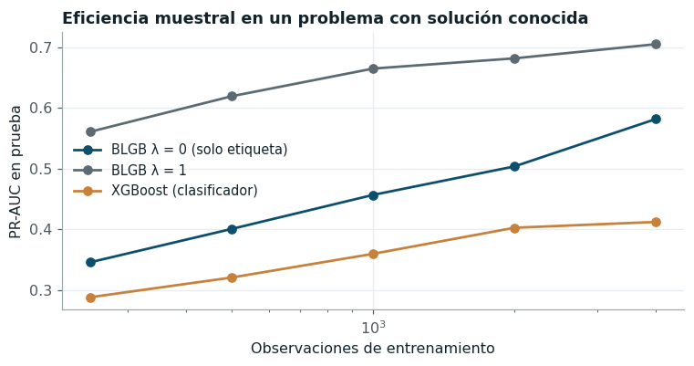

Modelo original: Band-Likelihood Gradient Boosting#
Motivación#
Los modelos benchmark del capítulo anterior reciben como objetivo una etiqueta binaria: el día t + 15 estuvo o no dentro de la banda de descarga efectiva. Esa etiqueta resulta de aplicar una condición de intervalo a una variable continua que también se observa, el caudal \(Q_{t+15}\), y al binarizarla se descarta información. Dos días negativos son indistinguibles para un clasificador aunque uno haya quedado a 50 m³/s del límite y el otro a 5.000 m³/s, y dos días positivos valen lo mismo aunque uno haya caído en el centro de la banda y el otro en su borde. Con un tamaño efectivo de muestra reducido por la autocorrelación, esa pérdida de información se traduce en varianza.
La alternativa habitual en hidrología, predecir el caudal y luego comparar con los límites, resuelve el problema solo a medias. Un regresor de mínimos cuadrados estima la media condicional, no la probabilidad de un intervalo; la probabilidad de banda exige además la dispersión condicional, que varía con el estado del río (la incertidumbre a quince días es mayor en el ascenso de una crecida que en un estiaje estable), y un modelo ajustado solo para el caudal no tiene incentivo para ser preciso justamente en la región de los límites, que es la que decide la clasificación.
El modelo propuesto, Band-Likelihood Gradient Boosting (BLGB), combina ambas fuentes de supervisión en una sola función objetivo: modela la distribución condicional completa del caudal futuro, con media y dispersión dependientes de las condiciones actuales, y la ajusta con una pérdida que pondera explícitamente el acierto sobre el evento de interés.
Formulación#
Sea \(Q^{\text{ref}}_i > 0\) el caudal observado en el instante de la predicción y \(z_i = \log(Q_{i,t+h}/Q^{\text{ref}}_i)\) el cambio logarítmico a horizonte \(h\). La banda \([L, U]\) se traslada al mismo espacio con límites propios de cada observación,
El modelo supone \(z_i \mid x_i \sim \mathcal{N}(\mu(x_i), \sigma(x_i)^2)\) y define la probabilidad de la clase positiva como la masa de esa distribución dentro de la banda,
La media \(\mu\) y el logaritmo de la dispersión \(s = \log \sigma\) son dos ensambles aditivos de árboles de regresión, \(\mu(x) = \mu_0 + \sum_t \eta_t f^{\mu}_t(x)\) y \(s(x) = s_0 + \sum_t \eta_t f^{s}_t(x)\). Trabajar con \(\log(Q_{t+h}/Q^{\text{ref}})\) en lugar del caudal tiene dos ventajas: el cambio relativo es aproximadamente simétrico y estacionario, y la dependencia de la banda respecto del estado actual queda absorbida por los límites (1), de modo que los árboles solo deben aprender la dinámica del cambio.
La pérdida empírica combina la entropía cruzada del evento y la log-verosimilitud gaussiana del caudal futuro, ponderada por \(\lambda \geq 0\):
El primer término es la pérdida de la tarea y el segundo aporta la supervisión continua. Con \(\lambda = 0\) el modelo es un clasificador de banda que solo usa la etiqueta; con \(\lambda \to \infty\) se reduce a una regresión distribucional del caudal seguida de la integración (2), es decir, al enfoque de dos etapas.
Gradientes y hessianos#
El boosting de segundo orden requiere, para cada observación, el gradiente y una aproximación positiva del hessiano de la pérdida respecto de \(\mu_i\) y \(s_i\). Con \(\varphi\) la densidad normal estándar, la derivada de la probabilidad de banda es
la segunda porque \(\partial a/\partial s = -a\) y \(\partial b/\partial s = -b\) cuando \(s = \log\sigma\). Por la regla de la cadena y \(\partial \ell_{\text{BCE}}/\partial p = (p - y)/[p(1-p)]\), el término de la tarea aporta
donde el hessiano es la aproximación de Gauss-Newton, igual a la información de Fisher del modelo de Bernoulli y siempre no negativa. El término gaussiano aporta
con \(h^{\text{N}}_s = 2\) igual a la información de Fisher del parámetro de escala logarítmica.
El gradiente total es \(g = g^{\text{BCE}} + \lambda g^{\text{N}}\) y el hessiano
\(h = h^{\text{BCE}} + \lambda h^{\text{N}}\). La prueba unitaria
test_gradientes_analiticos_coinciden_con_diferencias_finitas verifica (5) y
(6) contra diferencias finitas centrales con tolerancia relativa de \(10^{-4}\).
Árboles de segundo orden por histogramas#
Cada ronda ajusta un árbol para \(\mu\) y otro para \(s\). Las variables se discretizan una sola
vez en \(B = 64\) bins por cuantiles del entrenamiento, y los árboles crecen por niveles: para
cada nodo de un nivel se acumulan los gradientes y hessianos por variable y bin con una sola
llamada a np.bincount, y la mejor división maximiza la ganancia de segundo orden
sujeta a que cada hijo acumule un hessiano mínimo. El valor de cada hoja es el paso de Newton regularizado \(w_j = -G_j/(H_j + \lambda_h)\), de modo que, sobre los datos de la ronda, la derivada direccional de la pérdida a lo largo del árbol es \(\sum_j G_j w_j = -\sum_j G_j^2/(H_j+\lambda_h) \leq 0\): cada árbol es una dirección de descenso. Los faltantes se reemplazan por la mediana de entrenamiento antes de discretizar.
Pseudocódigo#
Algoritmo BLGB
Entrada: X ∈ ℝ^{n×p}, y ∈ {0,1}^n, caudal futuro q ∈ ℝ₊^n, referencia Q_ref ∈ ℝ₊^n,
banda [L, U], peso λ ≥ 0, tasa η, rondas T, profundidad d, paciencia P,
cotas σ_min < σ_max, fracción de validación ρ
Salida: ensambles F_μ, F_s
1 z_i ← log(q_i / Q_ref,i); l_i ← log(L / Q_ref,i); u_i ← log(U / Q_ref,i)
2 Discretizar cada columna de X en B bins por cuantiles (ajustados con X)
3 Separar el último ρ·n cronológico como validación V; el resto es A
4 μ_i ← media(z_A); s_i ← clip(log desv(z_A), log σ_min, log σ_max)
5 para t = 1, …, T:
6 (g_μ, h_μ, g_s, h_s) ← gradientes de ℒ en (μ, s) sobre una submuestra de A
7 f_μ ← ÁrbolNewton(X, g_μ, h_μ, d); f_s ← ÁrbolNewton(X, g_s, h_s, d)
8 η_t ← η
9 repetir hasta 8 veces:
10 si ℒ_A(μ + η_t f_μ, clip(s + η_t f_s)) ≤ ℒ_A(μ, s) + c·η_t·min(∇ℒ_Aᵀf, 0): aceptar
11 si no: η_t ← η_t / 2
12 si no se aceptó: terminar
13 μ ← μ + η_t f_μ; s ← clip(s + η_t f_s)
14 si la entropía cruzada en V no mejora en P rondas: terminar
15 Truncar en la ronda t* de mejor validación; reentrenar con A ∪ V durante t* rondas
16 devolver F_μ, F_s
Propiedades teóricas#
Teorema 1. La pérdida híbrida es una regla de puntuación estrictamente propia#
Enunciado. Sea \(G\) la distribución verdadera de \(z\) condicionada a \(x\), con densidad \(g\), y sea \(F\) cualquier distribución predictiva con densidad \(f\). Para una banda fija \(B=[l,u]\) defínase la puntuación \(S_\lambda(F, z) = -\mathbb{1}\{z\in B\}\log F(B) - \mathbb{1}\{z\notin B\}\log(1-F(B)) - \lambda\log f(z)\). Si \(\lambda > 0\), entonces \(\mathbb{E}_{G}[S_\lambda(F, Z)] \geq \mathbb{E}_{G}[S_\lambda(G, Z)]\), con igualdad si y solo si \(f = g\) casi en todas partes.
Demostración. La esperanza se descompone en
El término (i) es la entropía cruzada entre dos distribuciones de Bernoulli de parámetros \(G(B)\) y \(F(B)\); por la desigualdad de Gibbs es mayor o igual que la entropía de \(\text{Bernoulli}(G(B))\), con igualdad si y solo si \(F(B) = G(B)\). El término (ii) satisface \(-\mathbb{E}_G[\log f] = -\mathbb{E}_G[\log g] + \mathrm{KL}(G\,\|\,F) \geq -\mathbb{E}_G[\log g]\), con igualdad si y solo si \(f = g\) casi en todas partes. Sumando, la esperanza es mínima en \(F = G\). Si \(\mathbb{E}_G[S_\lambda(F,Z)] = \mathbb{E}_G[S_\lambda(G,Z)]\), como ambos términos alcanzan su mínimo en \(G\) y la suma es igual, cada uno debe alcanzarlo; en particular \(\lambda\,\mathrm{KL}(G\|F) = 0\) y, por ser \(\lambda>0\), \(f = g\) casi en todas partes. \(\blacksquare\)
El teorema tiene una consecuencia práctica. El término de la tarea por sí solo es propio pero no estrictamente propio respecto de la distribución completa: cualquier \(F\) con la misma masa en la banda lo minimiza, de modo que no identifica \(\mu\) ni \(\sigma\) y deja al modelo con muchos grados de libertad sin información para fijarlos. El término gaussiano restituye la identificabilidad y, por tanto, la consistencia del estimador en una clase de funciones suficientemente rica [Gneiting and Raftery, 2007]. A la inversa, cuando el modelo gaussiano está mal especificado (colas o asimetría distintas de las reales), el minimizador de la verosimilitud sola no coincide en general con la masa verdadera de la banda; el término de la tarea corrige ese sesgo en la región que decide la clasificación. El peso \(\lambda\) regula ese equilibrio y se elige por validación anidada.
Teorema 2. Descenso monótono y terminación#
Enunciado. Con \(\sigma \in [\sigma_{\min}, \sigma_{\max}]\), la sucesión de pérdidas de entrenamiento \(\mathcal{L}_t\) generada por el algoritmo es no creciente y converge, y el algoritmo termina en a lo sumo \(T\) rondas.
Demostración. El término de entropía cruzada es no negativo. En el término gaussiano, \(\tfrac12 r^2 + s \geq s \geq \log\sigma_{\min}\), de modo que \(\mathcal{L} \geq \lambda\log\sigma_{\min} > -\infty\): la pérdida está acotada inferiormente gracias a la cota de \(\sigma\) (sin ella, \(s \to -\infty\) en observaciones con residuo nulo haría divergir la verosimilitud). En cada ronda, el paso se acepta solo si cumple la condición de Armijo, \(\mathcal{L}_{t} \leq \mathcal{L}_{t-1} + c\,\eta_t \min(\nabla\mathcal{L}^\top f, 0) \leq \mathcal{L}_{t-1}\) [Armijo, 1966]; si ningún paso la cumple, el algoritmo se detiene sin modificar el modelo. Por tanto \(\{\mathcal{L}_t\}\) es no creciente y acotada inferiormente, y converge por el teorema de la convergencia monótona. La terminación es inmediata porque el número de rondas está acotado por \(T\) y cada ronda ejecuta a lo sumo ocho evaluaciones de la búsqueda lineal. \(\blacksquare\)
La garantía es deliberadamente modesta: asegura estabilidad numérica y monotonía, no
convergencia a un mínimo global, que no cabe esperar en un problema no convexo. Su valor
práctico se mide en la ablación: sin la búsqueda lineal, el paso fijo puede aumentar la pérdida
cuando los gradientes de la submuestra no representan bien los del conjunto completo, lo que
ocurre con frecuencia en los bordes de la banda, donde \(p(1-p)\) es pequeño y la entropía
cruzada tiene curvatura alta. La prueba test_descenso_monotono_de_la_perdida verifica la
monotonía en cada ronda.
Proposición 1. Complejidad#
Sea \(n\) el número de observaciones, \(p\) el de variables, \(k = \lceil c\,p\rceil\) las columnas muestreadas por ronda, \(B\) los bins, \(d\) la profundidad y \(T\) las rondas. La discretización cuesta \(O(np\log n)\) una vez. En cada nivel de un árbol, el histograma conjunto de todos los nodos cuesta \(O(nk)\) y la búsqueda de la división, \(O(m k B)\) con \(m \leq 2^{d}\) nodos; un árbol cuesta \(O(d(nk + 2^d kB))\). Cada ronda construye dos árboles, evalúa los gradientes en \(O(n)\) y la búsqueda lineal en \(O(n)\) por intento, de modo que el entrenamiento cuesta
lineal en \(n\) para \(d\) y \(B\) fijos. La inferencia de una observación cuesta \(O(p\log B)\) por la
discretización y \(O(Td)\) por el recorrido de los \(2T\) árboles. La memoria es \(O(np)\) bytes, por
almacenar la matriz discretizada en uint8, más \(O(T2^d)\) por los árboles. El contraste con el
tiempo empírico al variar \(n\) se presenta en la sección de optimización computacional.
Implementación#
La implementación completa está en src/original_model.py. La clase
BandLikelihoodBoosting hereda de BaseEstimator y ClassifierMixin, expone fit,
predict_proba y predict, y añade predict_distribucion, que devuelve la mediana y un
intervalo de predicción del caudal futuro: el dashboard lo usa para mostrar, junto con la
probabilidad de banda, el rango de caudales esperado. Las dependencias numéricas se limitan a
numpy y a scipy.special.ndtr para la función de distribución normal.
def gradientes(mu, s, l, u, y, z, lam):
"""Gradientes y hessianos (Gauss-Newton) respecto de μ y s = log σ.
Término de banda, con dp/dμ = (φ(a) − φ(b))/σ y dp/ds = aφ(a) − bφ(b):
g = (p − y)/(p(1 − p)) · dp/dθ, h = (dp/dθ)²/(p(1 − p)).
Término gaussiano (información de Fisher):
g_μ = −(z − μ)/σ², h_μ = 1/σ², g_s = 1 − r², h_s = 2.
"""
p, a, b, sig = probabilidad_banda(mu, s, l, u)
pa, pb = _phi(a), _phi(b)
dp_mu = (pa - pb) / sig
dp_s = a * pa - b * pb
w = 1.0 / (p * (1 - p))
g_mu, g_s = (p - y) * w * dp_mu, (p - y) * w * dp_s
h_mu, h_s = w * dp_mu ** 2, w * dp_s ** 2
if z is not None and lam > 0:
r = (z - mu) / sig
g_mu = g_mu - lam * r / sig
h_mu = h_mu + lam / sig ** 2
g_s = g_s + lam * (1 - r * r)
h_s = h_s + 2 * lam
return g_mu, h_mu + 1e-9, g_s, h_s + 1e-9
def construir_arbol(Xb: np.ndarray, g: np.ndarray, h: np.ndarray, n_bins: int, profundidad: int,
min_hess: float, reg_lambda: float, gamma: float,
columnas: np.ndarray) -> _Arbol:
"""Crece un árbol por niveles maximizando la ganancia de segundo orden.
Para un nodo con sumas (G, H) dividido en (G_L, H_L) y (G_R, H_R):
ganancia = ½ [G_L²/(H_L+λ) + G_R²/(H_R+λ) − G²/(H+λ)] − γ,
y el valor de cada hoja es −G/(H+λ), el paso de Newton regularizado. Los histogramas de
todos los nodos de un nivel se calculan con una sola llamada a ``np.bincount``.
Complejidad por nivel: O(n·k + m·k·B), con k columnas, B bins y m nodos del nivel.
"""
n = len(g)
k = len(columnas)
sub = Xb[:, columnas].astype(np.int64) # (n, k)
offs = (np.arange(k, dtype=np.int64) * n_bins)[None, :]
arbol = _Arbol()
raiz = arbol._nuevo(-g.sum() / (h.sum() + reg_lambda))
nodo_de = np.zeros(n, dtype=np.int64) # nodo actual de cada observación
frontera = [raiz]
for _ in range(profundidad):
if not frontera:
break
pos = {nd: j for j, nd in enumerate(frontera)}
local = np.full(len(arbol.valor), -1, dtype=np.int64)
for nd, j in pos.items():
local[nd] = j
loc = local[nodo_de]
vivos = loc >= 0
if not vivos.any():
break
m = len(frontera)
idx = (loc[vivos, None] * (k * n_bins) + offs + sub[vivos]).ravel()
tam = m * k * n_bins
G = np.bincount(idx, weights=np.repeat(g[vivos], k), minlength=tam).reshape(m, k, n_bins)
H = np.bincount(idx, weights=np.repeat(h[vivos], k), minlength=tam).reshape(m, k, n_bins)
GL, HL = np.cumsum(G, axis=2), np.cumsum(H, axis=2)
Gt, Ht = GL[:, :, -1:], HL[:, :, -1:]
GR, HR = Gt - GL, Ht - HL
with np.errstate(divide="ignore", invalid="ignore"):
ganancia = 0.5 * (GL ** 2 / (HL + reg_lambda) + GR ** 2 / (HR + reg_lambda)
- Gt ** 2 / (Ht + reg_lambda)) - gamma
ganancia[(HL < min_hess) | (HR < min_hess)] = -np.inf
ganancia[:, :, -1] = -np.inf # el último bin no separa nada
plano = ganancia.reshape(m, -1)
mejor = plano.argmax(axis=1)
nueva_frontera = []
for j, nd in enumerate(frontera):
gmax = plano[j, mejor[j]]
if not np.isfinite(gmax) or gmax <= 0:
continue
f_loc, b = divmod(int(mejor[j]), n_bins)
gl, hl = GL[j, f_loc, b], HL[j, f_loc, b]
gr, hr = GR[j, f_loc, b], HR[j, f_loc, b]
iz = arbol._nuevo(-gl / (hl + reg_lambda))
de = arbol._nuevo(-gr / (hr + reg_lambda))
arbol.feat[nd], arbol.umbral[nd] = int(columnas[f_loc]), b
arbol.izq[nd], arbol.der[nd] = iz, de
en_nodo = nodo_de == nd
a_izq = en_nodo & (Xb[:, columnas[f_loc]] <= b)
nodo_de[en_nodo] = de
nodo_de[a_izq] = iz
nueva_frontera += [iz, de]
frontera = nueva_frontera
return arbol.congelar()
Pruebas unitarias#
.............................. [100%]
30 passed in 4.05s
La batería de pruebas (resultado: 30 passed in 4.05s) cubre los cuatro requisitos
mínimos del entregable y añade verificaciones de las propiedades del algoritmo. El modelo
aprende un proceso sintético con solución conocida, recupera la media latente con una
correlación superior a 0,9 y detecta la heterocedasticidad simulada. Es reproducible con la
misma semilla y cambia con otra, porque la semilla gobierna el submuestreo. Rechaza
hiperparámetros y entradas inválidas con mensajes explícitos y es compatible con clone y con
cross_val_score. Además, los gradientes analíticos coinciden con las diferencias finitas, la
pérdida desciende en cada ronda y σ respeta sus cotas.
Ejemplo sintético: por qué la supervisión continua ayuda#

Figura 21 Problema sintético con banda conocida. PR-AUC en prueba del clasificador de banda sin supervisión continua (λ = 0) y de BLGB con λ = 1, en función del tamaño de entrenamiento (media de cinco semillas).#
En el problema sintético la ventaja de la supervisión continua es mayor cuanto menor es la muestra: con 250 observaciones BLGB supera al clasificador XGBoost en 0,272 puntos de PR-AUC y con 4.000, en 0,293. El patrón es el esperado si el beneficio proviene de la información que la etiqueta binaria descarta, y anticipa que la ganancia en el Magdalena será relevante, porque la autocorrelación reduce el tamaño efectivo de la muestra a una fracción de sus días.
Estudio de ablación#
| mean | std | Δ frente al completo | p | p_holm | delta_cliff | |
|---|---|---|---|---|---|---|
| variante | ||||||
| sin reajuste tras parada temprana | 0.9449 | 0.0547 | 0.0021 | 0.9829 | 1.0000 | -0.1111 |
| completo | 0.9428 | 0.0534 | 0.0000 | NaN | NaN | NaN |
| sin búsqueda lineal de Armijo | 0.9428 | 0.0534 | 0.0000 | 1.0000 | 1.0000 | 0.0000 |
| σ constante (homocedástico) | 0.9421 | 0.0443 | -0.0007 | 0.1331 | 0.3992 | 0.0833 |
| solo verosimilitud (λ = 100) | 0.9386 | 0.0624 | -0.0042 | 0.0386 | 0.1543 | 0.0556 |
| sin supervisión continua (λ = 0) | 0.9203 | 0.0856 | -0.0225 | 0.0134 | 0.0671 | 0.1944 |
La ablación retira cada componente por separado, con los hiperparámetros que la validación anidada eligió en cada pliegue, y compara contra el modelo completo con la prueba de Wilcoxon y corrección de Holm. Retirar la supervisión continua (\(\lambda = 0\)) cambia la PR-AUC media en -0,0225; imponer una dispersión constante, en -0,0007; eliminar la búsqueda lineal, en +0,0000; y reducir el modelo a la verosimilitud pura (\(\lambda = 100\), equivalente al enfoque de dos etapas dentro del mismo algoritmo), en -0,0042.
La lectura de estas cifras es nítida en un punto y matizada en los demás. La supervisión continua es el componente que más aporta: sin ella el modelo pierde más de dos centésimas de PR-AUC y su desviación entre bloques casi se duplica, lo que confirma que la ganancia del modelo proviene de la información del caudal futuro que la etiqueta binaria descarta. La verosimilitud pura, en cambio, queda cerca del modelo completo: el término de la tarea añade una mejora pequeña sobre la regresión distribucional, coherente con el teorema 1, según el cual ambos términos tienen el mismo minimizador cuando la familia gaussiana es adecuada, y solo divergen cuando está mal especificada. La dispersión heterocedástica casi no cambia la discriminación, pero su efecto está en la calibración, que se examina en el capítulo 6. Por último, retirar la búsqueda lineal de Armijo no altera ningún resultado: en todos los pliegues el primer paso propuesto cumplió la condición de descenso, de modo que la búsqueda nunca redujo el paso. Su papel es el de una salvaguarda que garantiza la monotonía del teorema 2, no el de una fuente de desempeño, y así se declara.